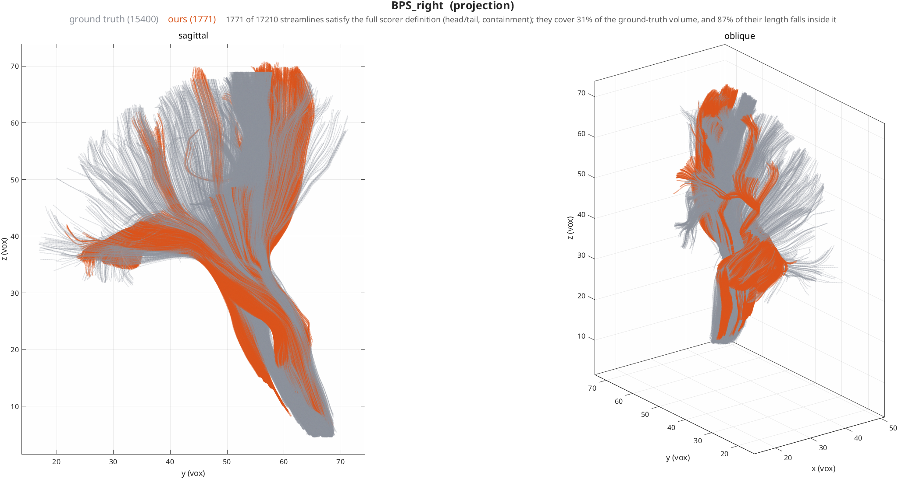
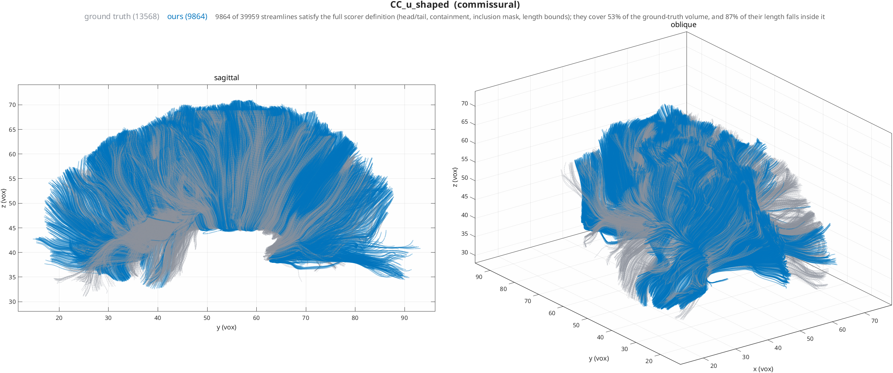
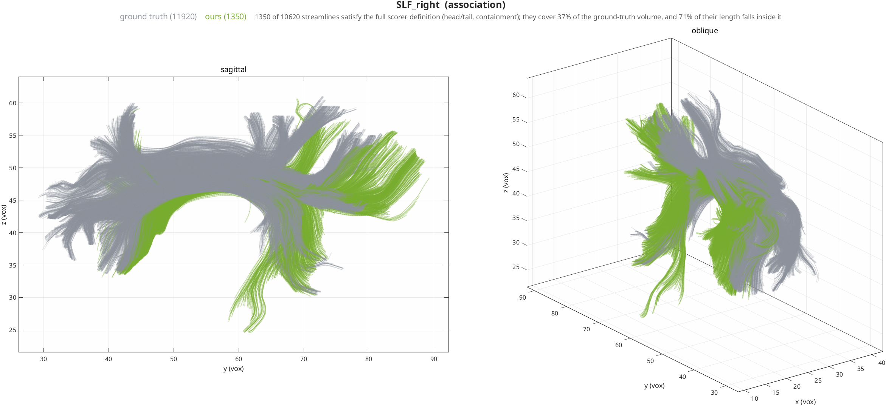
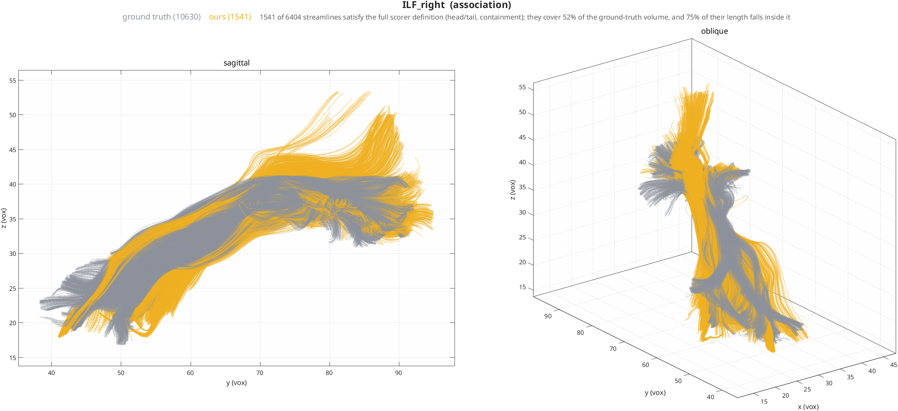
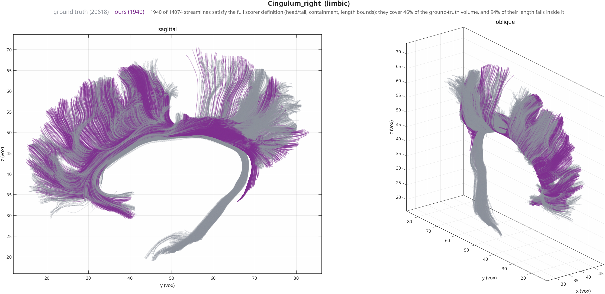

ISMRM 2015 Challenge Scoring¶
The ISMRM 2015 Tractography Challenge ships a synthetic whole-brain phantom
together with the ground truth used to score it. This page documents what is in
that scoring package, how a bundle is defined by it, what the shipped HINEC
scoring path does with it, and what our reconstructions currently measure.
Everything below is read from
data/ismrm2015/scoring_data_Renauld2023/ (Renauld et al. 2023 revision of the
original 2015 scoring system).
The scorer expects a whole-brain tractogram
The Renauld 2023 scorer takes one whole-brain tractogram and segments it
into 26 bundles using ROI gates. Its headline numbers — mean_f1,
mean_OL, mean_OR_gt, VB — are averages over all 26. Feeding it
streamlines from a single seed ROI is not a valid use of it: at most one
bundle can be recovered, so VB caps at 1 of 26 and a mean over 26 bundles
is dominated by the 25 that were never attempted. No score obtained that
way is comparable to a published challenge result. Every score collected
for HINEC so far is of that kind; the whole-brain submission has not been
run.
Reconstruction against ground truth¶
Each bundle below is seeded from its own ISMRM mask and then segmented by the
full scorer definition taken from config_file_segmentation.json: one
endpoint in each of the head and tail ROIs, every point inside the containment
corridor, plus any inclusion mask and length bounds that bundle declares
(Cingulum_right carries length_x, CC_u_shaped an inclusion mask and three
length bounds). Grey is the ground-truth tractogram; colour is ours.
Two different things are reported, and conflating them flatters the result:
- coverage of the ground truth — what fraction of the true bundle's volume our streamlines occupy. This is the recall-like number and the honest headline.
- length inside the ground truth — what fraction of our streamline length falls within the true bundle. This is precision-like, and it is always the prettier of the two.
| bundle | produced | meets full definition | covers GT volume | length inside GT |
|---|---|---|---|---|
| CC_u_shaped | 39959 | 9864 | 53% | 87% |
| BPS_right | 17210 | 1771 | 31% | 87% |
| ILF_right | 6404 | 1541 | 52% | 75% |
| Cingulum_right | 14074 | 1940 | 46% | 94% |
| UF_right | 4693 | 995 | 49% | 75% |
| SLF_right | 10620 | 1350 | 37% | 71% |
We reconstruct between a third and a half of each bundle, and what we do reconstruct sits mostly inside the true bundle (71–94%). Earlier versions of this page quoted 94–100% "agreement"; that was the precision-like quantity measured against the corridor rather than the ground truth, and it should not have been the headline.
The produced column is not a failure rate
It is dominated by a seeding choice. These runs seed uniformly inside each
bundle's containment corridor, and that corridor is far larger than the
bundle: for Cingulum_right it is 38188 voxels against the 8070 the bundle
actually occupies, so 79% of the corridor is other tissue. 62% of the
seeds therefore start off-bundle, and 93% of those leave the corridor —
which is the correct behaviour for a tracker following the fibres that are
really there. Seeds that do start inside the true bundle stay contained at
41%, against 7% for the rest. Only a whole-brain run gives this denominator
a meaning; see below.
Whole-brain benchmark¶
config/ismrm_wholebrain.yml produces one whole-brain tractogram and lets the
scorer segment all 26 bundles out of it, which is what the challenge is designed
for and what makes the numbers comparable to a published submission.
| metric | value |
|---|---|
| streamlines | 60209 |
| mean F1 | 0.350 |
| mean overlap (OL) | 0.323 |
| mean overreach (OR_gt) | 0.283 |
| valid bundles found | 22 of 26 |
| valid streamlines | 31641 (53%) |
| invalid streamlines | 28568 |
DTI with an accurate integrator finds most of the bundles and gets about half its streamlines accepted. That is a middling result, and the reason is structural rather than numerical.
Why streamlines leave the bundle¶
The direction field is not the weak link. Sampled along the ground truth,
the interpolated field the tracker actually follows sits 5.6–9.1° from the true
tract direction, and RK4 on it converges at observed order 4.00
(docs/CONVERGENCE.md). The failures are not integration error.
Taking the 715 Cingulum_right streamlines that demonstrably ran along the
bundle and then left it, and classifying the voxel where each one first departed
by more than 45°:
| what the tensor looks like where it departs | share | interpretation |
|---|---|---|
| planar (C_P > 0.12), FA normal | 27% | two fibre populations in one voxel |
| FA collapsed below 0.08 | 9% | too little anisotropy to define a direction |
| linear (median C_L 0.191), FA normal (0.184) | 65% | a confident single direction belonging to another bundle |
The median departure is at z = 48, on the dorsal arc, not at the bend — only 42% occur in the bend band at all.
This matters for what to do next. field: csd resolves multiple fibre
orientations per voxel and should recover a useful part of the 27%. It cannot
address the 65%: CSD separates fibres by orientation, and two bundles running
tangentially share one orientation, so nothing local distinguishes them. That
needs non-local information — global tractography, anatomical priors, or
bundle-level regularisation.
Derailment is rare, concentrated, and irreversible¶
A streamline is a path integral, so a direction error is not averaged away by
later steps. Measured over 9254 streamline arms that start on the true
Cingulum_right tract:
| after a streamline departs by >45° | recovers directional agreement |
|---|---|
| sustained departure (held over ≥2 voxels) | 2.2% |
| same, with ≥30 voxels of track still to run | 2.1% |
| transient crossing of the 45° line | ~50% of all crossings; these recover |
A sustained derailment is effectively absorbing, and giving the streamline more track to run does not help it recover. An earlier version of this page claimed this using a containment envelope test, which reported 88% recovery and was wrong: re-entering a fat, folded bundle envelope somewhere else is nearly free and says nothing about whether the trajectory was recovered.
The risk is not spread evenly along a streamline. 50% of all departures occur in 0.3% of the traversed arc, and 90% in 1.5% — a few hundred voxels. Within the bundle, low linearity predicts them best (7× hazard range across C_L quintiles) and high planarity is the strongest positive predictor (4×, monotone). FA barely predicts anything (1.4× range, in the wrong direction), which is worth noting given that FA is what termination tests.
The integrator is not the problem¶
Three runs on matched seed sets differing only in integration method:
| method | formal order | S(20 vox) | S(40 vox) | vs RK4 (log-rank) |
|---|---|---|---|---|
| Euler | 1 | 0.444 | 0.168 | p = 0.37, not significant |
| RK2 | 2 | 0.318 | 0.095 | p < 1e-4 |
| RK4 | 4 | 0.408 | 0.194 | — |
Euler and RK4 are statistically indistinguishable, and the ordering is not
monotone in integrator order. The integrator shifts survival by ≤0.10 while the
effect itself destroys 60–80% of streamlines. Truncation error does not behave
like this: the dominant error is model error, not numerical error, which is
consistent with RK4 converging at observed order 4.00 on this same pipeline.
(Measured on UF_right with ~6× fewer arms and the flicker-inclusive departure
definition; it supports "not ordered by integrator order", not a stronger claim.)
These remain qualitative figures, and seeding from a bundle's own mask is a far easier problem than the whole-brain submission the challenge is designed around, so none of this constitutes a challenge score.
Projection¶

Commissural¶

Association¶



Limbic¶

What defines a bundle¶
A bundle in this scoring system is an endpoint pair plus a containment
corridor, not a parcellation label. config_file_segmentation.json gives one
entry per bundle:
{
"UF_right": {
"all_mask": "ROI/all_masks/UF_right.nii.gz",
"head": "ROI/endpoints/UF_right_head.nii.gz",
"tail": "ROI/endpoints/UF_right_tail.nii.gz"
}
}
A streamline is assigned to UF_right only if one end lands in the head ROI, the
other end in the tail ROI, and every point lies inside all_mask. Two
optional gates appear on some bundles:
any_mask— at least one point must fall inside it. Present on 6 of the 26 entries:CC_u_shaped,MCP, and the fourICP_*_part*entries.length,length_x,length_y,length_z,length_x_abs— total streamline length and per-axis extents, in millimetres. Present on 4 of the 26:CC_u_shaped,Cingulum_left,Cingulum_right,MCP.CC_u_shapedis the fully loaded case:
{
"CC_u_shaped": {
"all_mask": "ROI/all_masks/CC_u_shaped.nii.gz",
"any_mask": "ROI/any_masks/CC_u_shaped_inclusion_mask.nii.gz",
"head": "ROI/endpoints/CC_striatal_left.nii.gz",
"tail": "ROI/endpoints/CC_striatal_right.nii.gz",
"length": [70, 1000],
"length_y": [0, 32],
"length_x_abs": [35, 1000]
}
}
An atlas label of the same name is not the same region
A JHU atlas label and an ISMRM bundle can share a name and describe very
different volumes. JHU label 47, Uncinate fasciculus R, is 24 voxels on
the 2 mm DWI grid; the corresponding ISMRM bundle-density mask (scoring_data_2015/masks/bundles/) occupies 1503 and the Renauld containment corridor 14260, and the two
overlap at a Dice of 0.018. Seeding from the atlas label and scoring against
the ISMRM bundle of that name is therefore not a like-for-like comparison.
Address the challenge's own regions instead: build the parcellation from the
challenge masks with nim_parcellation_from_masks, after which ROI names
resolve against nim.roi_masks (see nim_roi_mask).
Bundle gates in HINEC¶
Two tractography.filter predicates express the scorer's definition directly:
| key | test |
|---|---|
filter.endpoints_in |
two regions; keep a track only if one end lands in each, either way round |
filter.contained_in |
keep a track only if every point lies inside the given regions |
These are distinct from filter.include_roi, which is a waypoint test — it
asks whether a track passes through a region, not where it stops.
What is in the scoring package¶
scoring_data_Renauld2023/
├── bundles/ 21 ground-truth .trk files
│ └── sub_bundles/ 8 further .trk files (CC and ICP subdivisions)
├── ROI/
│ ├── all_masks/ 26 containment corridors
│ ├── any_masks/ 4 inclusion masks
│ └── endpoints/ 45 head/tail ROIs (some shared, e.g. brainstem)
├── config_file_segmentation.json 26 bundle definitions (ROI gates)
├── config_file_tractometry.json bundle name -> ground-truth .trk
└── t1.nii.gz 1 mm reference, 180x216x180
The 21 top-level bundles are commissural (CA, CC, CP, MCP), association
(Cingulum, ILF, OR, SLF, UF, each left and right), projection (BPS,
ICP, SCP, each left and right) and Fornix. The segmentation config reaches
26 entries because CC is scored as four sub-bundles (CC_temporal,
CC_u_shaped, CC_ventro_striatal1, CC_ventro_striatal2) and each ICP as
two parts.
Ground-truth streamline counts span two orders of magnitude, which is why a mean over bundles is not a mean over streamlines:
| bundle | streamlines | bundle | streamlines | |
|---|---|---|---|---|
| MCP | 21008 | ILF_left | 11164 | |
| Cingulum_right | 20618 | BPS_left | 11162 | |
| CC | 16550 | ILF_right | 10630 | |
| BPS_right | 15400 | OR_right | 9524 | |
| Cingulum_left | 14206 | OR_left | 7252 | |
| SLF_left | 12483 | UF_right | 6751 | |
| SLF_right | 11920 | UF_left | 5899 | |
| ICP_left | 4217 | Fornix | 3827 | |
| ICP_right | 3224 | SCP_left | 1795 | |
| SCP_right | 1560 | CA | 430 | |
| CP | 365 |
CP and CA are the smallest and, together with the commissures, the hardest to
recover.
The scoring path¶
bin/run_ismrm_scoring.sh <run_dir> is the single entry point. It performs three
steps:
- Convert.
scripts/hinec_to_trk.pyturns the newest<run_dir>/tractography/tracks*.matintoscoring/tracks.trkin RAS world millimetres, using the preprocessed DWI affine from<run_dir>/intermediate/for voxel→world placement (falling back todata/ismrm2015/ismrm2015.nii.gz) and attaching the scoringt1.nii.gzas the saved TRK reference so scilpy's space-compatibility check against the ROI masks passes. - Score (Renauld 2023).
scil_tractogram_segment_with_ROI_and_scoreruns againstconfig_file_merged.json— the segmentation rules and the per-bundlegt_maskin one file, produced byscripts/build_ismrm_scoring_config.py. Without the merged config the run yields bundle counts but no Dice or overlap. Output:<run_dir>/scoring/renauld2023/results.json. - Cross-check (optional). If
data/ismrm2015/scoring_data_2015/and the original challenge scorer are present, the dedicated 2015 scorer is run as well, into<run_dir>/scoring/dedicated2015/.
Headline keys in results.json:
| key | meaning |
|---|---|
mean_f1 |
Dice-style agreement per bundle, averaged over the 26 |
mean_OL |
overlap — fraction of the true bundle covered (recall) |
mean_OR_gt |
overreach — produced volume outside the true bundle |
VB |
valid bundles: how many of the 26 were recovered at all |
Bundle recognition by shape (RecoBundles) is an alternative the challenge tooling supports and the HINEC path does not use; it is more forgiving of ROI misalignment and a correspondingly weaker test of anatomical placement.
Coordinate spaces¶
Scores collapse to zero on a space mismatch, and a space mismatch looks exactly like a tracking failure, so it is worth checking before believing a low score.
| HINEC tracks | ISMRM ground truth | |
|---|---|---|
| format | .mat, cell array of N×3 |
.trk (TrackVis) |
| coordinates | voxel indices, 1-based (MATLAB) | RAS world millimetres |
| grid | DWI, 2 mm, 90×108×90 | T1, 1 mm, 180×216×180 |
| space attribute | implicit | explicit in the TRK header |
Since August 2022 the challenge scoring code loads tractograms through Dipy's
StatefulTractogram and no longer applies the half-voxel shift that older
TrackVis-era readers used. Coordinates are taken from the header as given, so a
TRK written with the wrong reference is silently misinterpreted rather than
rejected: the ROI gates then match nothing and every bundle scores 0.
hinec_to_trk.py handles the conversion, and nim_read_trk performs the reverse
mapping (world RAS → DWI voxel space) when ground truth is loaded into MATLAB for
plotting. Skipping that reverse step draws the ground truth at half scale in a
corner — which, again, reads as a tracking failure and is a units bug.
To check alignment directly, compare coordinate ranges and header spaces of the two tractograms:
import nibabel as nib
import numpy as np
ours = nib.streamlines.load('tracks.trk')
gt = nib.streamlines.load('scoring_data_Renauld2023/bundles/CA.trk')
for name, trk in [('ours', ours), ('ground truth', gt)]:
pts = np.vstack(list(trk.streamlines))
print(name, [f'[{pts[:, i].min():.1f}, {pts[:, i].max():.1f}]' for i in range(3)])
Both should span the same millimetre range. If they do not, fix the reference before reading anything into the scores.
Limits of this benchmark¶
- One phantom, one subject. Nothing measured here establishes generality.
- The ground truth is synthetic. The bundles are anatomically motivated but simulated; agreement with them is not agreement with a real brain.
- ROI-gate sensitivity. Bundle assignment depends on precise mask alignment, so registration error is charged to the tracker.
- Bundle-averaged metrics.
mean_f1weightsCP(365 ground-truth streamlines) as heavily asMCP(21008).
For a complementary check with a biological rather than synthetic reference, see IronTract, which scores against tracer injections.